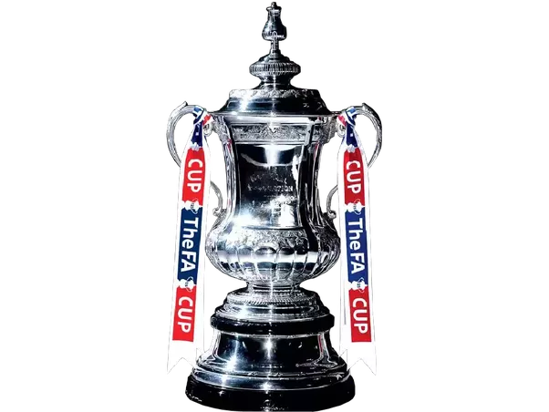

Trofeji kluba
Chelsea je osvojio sve!
Premier League (6)
1955, 2005, 2006, 2010, 2015, 2017
UEFA Champions League (2)
2012, 2021

FA Cup (8)
1970, 1997, 2000, 2007, 2009, 2010, 2012, 2018

UEFA Europa League(2)
2013, 2019